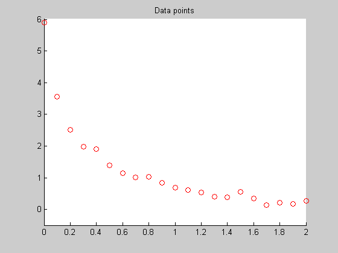
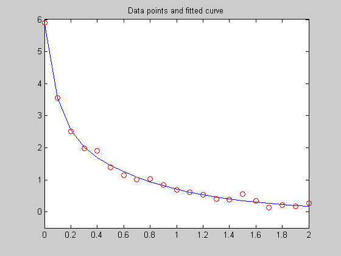

This example demonstrates fitting a nonlinear function to data using several of the different medium-scale methods available in the Optimization Toolbox.
Consider the following data:
Data = ...
[0.0000 5.8955
0.1000 3.5639
0.2000 2.5173
0.3000 1.9790
0.4000 1.8990
0.5000 1.3938
0.6000 1.1359
0.7000 1.0096
0.8000 1.0343
0.9000 0.8435
1.0000 0.6856
1.1000 0.6100
1.2000 0.5392
1.3000 0.3946
1.4000 0.3903
1.5000 0.5474
1.6000 0.3459
1.7000 0.1370
1.8000 0.2211
1.9000 0.1704
2.0000 0.2636];
Let's plot these data points.
close all fig = colordef(gcf, 'white'); t = Data(:,1); y = Data(:,2); axis([0 2 -0.5 6]) figure(fig) hold on plot(t,y,'ro','EraseMode','none') title('Data points') hold off
We would like to fit the function
y = c(1)*exp(-lam(1)*t) + c(2)*exp(-lam(2)*t)
to the data. This function has two linear parameters c and two nonlinear parameters lam.
Since the function has a combination of linear and nonlinear parameters, we will separate the solving into two steps. We will use one of the optimization routines such as LSQNONLIN to solve for the nonlinear parameters, and inside our function we will use "\" to solve for the linear parameters.
We write a function, called FITFUN2, that, given the nonlinear parameters lam and the data, solves for the current estimate of the linear parameters and then returns the error in the fit.
This is the M-file for function FITFUN2:
type fitfun2
function [f, yEst] = fitfun2(lam,Data) %FITFUN2 Used by DATDEMO to return errors in fitting data to a function. % FITFUN2 is used by DATDEMO. % f = FITFUN2(lam,Data) returns the error between the data and the values % computed by the current function of lam. % [f, yEst] = FITFUN2(lam,Data) also returns the estimated value of y; % that is, the value of the current model. % % FITFUN2 assumes a function of the form % % y = c(1)*exp(-lam(1)*t) + ... + c(n)*exp(-lam(n)*t) % % with n linear parameters and n nonlinear parameters. % % To solve for the linear parameters c, we build a matrix A % where the j-th column of A is exp(-lam(j)*t) (t is a vector). % Then we solve A*c = y for the linear least-squares solution c. % Copyright 1990-2004 The MathWorks, Inc. % $Revision: 1.15.4.2 $ $Date: 2004/04/06 01:10:20 $ t = Data(:,1); y = Data(:,2); % separate Data matrix into t and y A = zeros(length(t),length(lam)); % build A matrix for j = 1:length(lam) A(:,j) = exp(-lam(j)*t); end c = A\y; % solve A*c = y for linear parameters c yEst = A*c; f = y - yEst; % compute error (residual) y-A*c
We set some option parameters via OPTIMSET. Our objective function requires additional parameters (namely, the matrix Data); the most convenient way to pass these is through an anonymous function:
f = @(x) (norm(fitfun2(x,Data)))
f =
@(x) (norm(fitfun2(x,Data)))
Next, we set some option parameters via OPTIMSET and we provide a guess for the initial estimates of the nonlinear parameters
options=optimset('LargeScale','off','Display','iter','TolX',1e-3); lam0 = [1; 0]; % Initial guess for nonlinear parameters
First, we optimize running the BFGS quasi-Newton algorithm, implemented in the function FMINUNC:
plothandle = plotdatapoints(t,y); % plot data points and get plot handle. % Output function requires additional parameters data and plothandle; use % an anonymous function: foutputfcn = @(x,optimvalues,state) fitfun2outputfcn(x,optimvalues,state, ... Data,plothandle); options = optimset(options,'OutputFcn',foutputfcn); t0 = clock; [lam,fval,exitflag,output] = fminunc(f,lam0,options); execution_time=etime(clock, t0); fprintf('\nNumber of iterations: %g\nNumber of function evaluations: %g\n', output.iterations, output.funcCount); fprintf('Sum of squared residuals at solution: %g\n',fval^2); fprintf('Execution time: %g\n',execution_time);
Gradient's
Iteration Func-count f(x) Step-size infinity-norm
0 3 2.59569 1.07
1 6 1.65382 0.936212 0.654
2 9 0.958437 1 0.266
3 12 0.8686 1 0.161
4 18 0.777006 0.227638 0.206
5 21 0.703335 1 0.368
6 24 0.537198 1 0.306
7 27 0.44135 1 0.522
8 30 0.411955 1 0.487
9 33 0.386377 1 0.0189
10 36 0.384929 1 0.0172
11 39 0.384354 1 0.00133
12 42 0.384347 1 0.000253
13 45 0.384347 1 2.02e-005
Optimization cannot make further progress:
relative change in x less than options.TolX.
Number of iterations: 13
Number of function evaluations: 45
Sum of squared residuals at solution: 0.147723
Execution time: 0.406
 Now we run FMINSEARCH, which implements the Nelder-Mead algorithm:
plothandle = plotdatapoints(t,y); % plot data points and get plot handle. % Output function requires additional parameters data and plothandle; use % an anonymous function: foutputfcn = @(x,optimvalues,state) fitfun2outputfcn(x,optimvalues,state, ... Data,plothandle); options = optimset(options,'OutputFcn',foutputfcn); t0 = clock; [lam,fval,exitflag,output] = fminsearch(f,lam0,options); execution_time=etime(clock, t0); fprintf('\nNumber of iterations: %g\nNumber of function evaluations: %g\n', output.iterations, output.funcCount); fprintf('Sum of squared residuals at solution: %g\n',fval^2); fprintf('Execution time: %g\n',execution_time);
Iteration Func-count min f(x) Procedure
0 1 2.59569
1 3 2.5425 initial simplex
2 5 2.51592 expand
3 7 2.39864 expand
4 9 2.29017 expand
5 11 2.02098 expand
6 13 1.71637 expand
7 15 1.24546 expand
8 17 1.03269 expand
9 18 1.03269 reflect
10 20 1.03269 contract inside
11 22 1.03269 contract inside
12 24 1.03269 contract inside
13 26 1.03017 contract inside
14 27 1.03017 reflect
15 29 1.02989 contract inside
16 31 1.02989 contract outside
17 33 1.02981 contract inside
18 35 1.02974 reflect
19 37 1.02974 contract inside
20 39 1.02956 expand
21 40 1.02956 reflect
22 42 1.02921 expand
23 43 1.02921 reflect
24 45 1.02879 expand
25 47 1.02817 expand
26 49 1.02717 expand
27 51 1.02516 expand
28 53 1.02283 expand
29 55 1.01675 expand
30 57 1.01161 expand
31 59 0.994259 expand
32 61 0.979328 expand
33 63 0.920462 expand
34 65 0.808253 expand
35 67 0.550818 expand
36 69 0.456618 reflect
37 71 0.456618 contract outside
38 73 0.456618 contract inside
39 75 0.456618 contract inside
40 77 0.456618 contract inside
41 79 0.454383 reflect
42 81 0.450431 expand
43 83 0.438599 expand
44 85 0.43759 reflect
45 87 0.423992 expand
46 89 0.40774 expand
47 91 0.406488 reflect
48 93 0.391861 reflect
49 94 0.391861 reflect
50 96 0.38652 reflect
51 98 0.38652 contract inside
52 100 0.385648 contract outside
53 102 0.384691 contract inside
54 104 0.384506 contract inside
55 106 0.384497 contract outside
56 108 0.384367 contract inside
57 110 0.384367 contract inside
58 112 0.384362 contract outside
59 114 0.38435 contract inside
60 116 0.38435 contract inside
61 118 0.384349 contract outside
62 120 0.384347 contract inside
63 122 0.384347 contract inside
64 123 0.384347 reflect
65 125 0.384347 contract inside
66 127 0.384347 contract inside
67 129 0.384347 contract inside
68 131 0.384347 contract outside
69 133 0.384347 contract inside
70 135 0.384347 contract inside
Optimization terminated:
the current x satisfies the termination criteria using OPTIONS.TolX of 1.000000e-003
and F(X) satisfies the convergence criteria using OPTIONS.TolFun of 1.000000e-004
Number of iterations: 70
Number of function evaluations: 135
Sum of squared residuals at solution: 0.147723
Execution time: 0.296
We now try the Levenberg-Marquardt method in the nonlinear least squares solver LSQNONLIN:
plothandle = plotdatapoints(t,y); % plot data points and get plot handle. % Output function requires additional parameters data and plothandle; use % an anonymous function: F = @(x) fitfun2(x,Data); foutputfcn = @(x,optimvalues,state) fitfun2outputfcn(x,optimvalues,state, ... Data,plothandle); options = optimset(options,'OutputFcn',foutputfcn); options = optimset(options,'NonlEqnAlgorithm','lm'); t0 = clock; [lam,resnorm,residual,exitflag,output]= lsqnonlin(F,lam0,[],[],options); execution_time=etime(clock, t0); fprintf('\nNumber of iterations: %g\nNumber of function evaluations: %g\n', output.iterations, output.funcCount); fprintf('Sum of squared residuals at solution: %g\n',resnorm); fprintf('Execution time: %g\n',execution_time);
Directional
Iteration Func-count Residual Step-size derivative Lambda
0 3 6.73763
1 12 0.538592 7.75 -0.0413 2.55472
2 18 0.371913 1.18 -0.000297 0.154827
3 25 0.269712 1.8 0.000302 0.0710558
4 32 0.196118 1.5 -2.37e-006 0.0355279
5 39 0.162506 1.42 2.12e-005 0.0141848
6 46 0.149645 1.51 -2.25e-005 0.00709242
7 52 0.147859 1.23 8.89e-008 0.00282179
8 58 0.147725 1.18 -1.65e-009 0.00141089
9 59 0.147723 1 -5.05e-006 0.000646289
Optimization terminated: directional derivative along
search direction less than TolFun and infinity-norm of
gradient less than 10*(TolFun+TolX).
Number of iterations: 9
Number of function evaluations: 59
Sum of squared residuals at solution: 0.147723
Execution time: 0.625
Next, we run again LSQNONLIN, but this time we select the Gauss-Newton method:
plothandle = plotdatapoints(t,y); % plot data points and get plot handle. % Output function requires additional parameters data and plothandle; use % an anonymous function: F = @(x) fitfun2(x,Data); foutputfcn = @(x,optimvalues,state) fitfun2outputfcn(x,optimvalues,state, ... Data,plothandle); options = optimset(options,'OutputFcn',foutputfcn); options = optimset(options,'NonlEqnAlgorithm','gn'); t0 = clock; [lam,resnorm,residual,exitflag,output]= lsqnonlin(F,lam0,[],[],options); execution_time=etime(clock, t0); fprintf('\nNumber of iterations: %g\nNumber of function evaluations: %g\n', output.iterations, output.funcCount); fprintf('Sum of squared residuals at solution: %g\n',resnorm); fprintf('Execution time: %g\n',execution_time);
Directional
Iteration Func-count Residual Step-size derivative Lambda
0 3 6.73763
1 12 0.538592 7.75 -0.0413 2.55472
2 18 0.371913 1.18 -0.000297 0.154827
3 25 0.269712 1.8 0.000302 0.0710558
4 32 0.196118 1.5 -2.37e-006 0.0355279
5 39 0.162506 1.42 2.12e-005 0.0141848
6 46 0.149645 1.51 -2.25e-005 0.00709242
7 52 0.147859 1.23 8.89e-008 0.00282179
8 58 0.147725 1.18 -1.65e-009 0.00141089
9 59 0.147723 1 -5.05e-006 0.000646289
Optimization terminated: directional derivative along
search direction less than TolFun and infinity-norm of
gradient less than 10*(TolFun+TolX).
Number of iterations: 9
Number of function evaluations: 59
Sum of squared residuals at solution: 0.147723
Execution time: 0.266
We can also minimize the worst-case error by calling the solver FMINIMAX:
plothandle = plotdatapoints(t,y); % plot data points and get plot handle. % Output function requires additional parameters data and plothandle; use % an anonymous function: F = @(x) fitfun2(x,Data); foutputfcn = @(x,optimvalues,state) fitfun2outputfcn(x,optimvalues,state, ... Data,plothandle); options = optimset(options,'OutputFcn',foutputfcn); t0 = clock; options = optimset(options,'MinAbsMax',length(t)); [lam,allfvals,maxfval,exitflag,output]=fminimax(F,lam0,[],[],[],[],[],[],[],options); execution_time=etime(clock, t0); fprintf('\nNumber of iterations: %g\nNumber of function evaluations: %g\n', output.iterations, output.funcCount); fprintf('Sum of squared residuals at solution: %g\n',allfvals'*allfvals); fprintf('Execution time: %g\n',execution_time); close(fig)
Max Directional
Iter F-count {F,constraints} Step-size derivative Procedure
0 4 2.00277
Warning: Rank deficient, rank = 2, tol = 2.1368e-014.
1 9 1.254 1 1.07
2 14 0.7696 1 -0.446
3 19 0.477 1 -0.189
4 24 0.3068 1 -0.0974 Hessian modified
5 29 0.2946 1 -0.0448 Hessian modified
6 34 0.27 1 -0.0456 Hessian modified
7 39 0.236 1 -0.02
8 44 0.2272 1 -0.00193
9 49 0.2272 1 -1.38e-005 Hessian modified
10 55 0.2286 0.5 -0.00201 Hessian modified twice
11 60 0.2099 1 -0.036 Hessian modified
12 65 0.1735 1 -0.0164 Hessian modified
13 70 0.1715 1 -0.00229 Hessian modified twice
14 75 0.1715 1 5.56e-007 Hessian modified
Optimization terminated: Search direction less than 2*options.TolX
and maximum constraint violation is less than options.TolCon.
Active inequalities (to within options.TolCon = 1e-006):
lower upper ineqlin ineqnonlin
2
5
16
Number of iterations: 14
Number of function evaluations: 75
Sum of squared residuals at solution: 0.199005
Execution time: 1.296